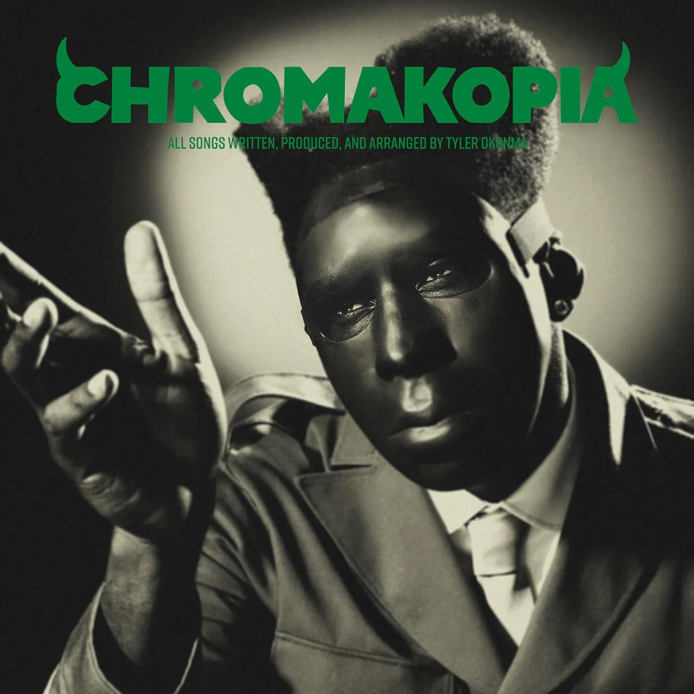

inicio
Lançado em outubro de 2024, Chromakopia é o oitavo projeto de Tyler, The Creator. O álbum marca um retorno a uma estética mais densa e experimental, focando na figura do personagem St. Chroma. Diferente dos álbuns coloridos anteriores, este disco explora temas de herança, identidade e o peso da fama através de uma sonoridade que mistura rap industrial com coros grandiosos.
O disco foi inteiramente escrito, produzido e arranjado por Tyler. A narrativa é guiada pela voz de sua mãe, Bonita Smith, fornecendo conselhos e reflexões sobre a vida adulta. Chromakopia é considerado um dos trabalhos mais maduros do artista, onde ele reflete sobre seu legado e o amadurecimento aos 33 anos de idade.
Abaixo, alguns pontos fundamentais sobre a obra:
Chromakopia consolidou Tyler como um artista que não segue tendências, lançando o álbum em uma segunda-feira e provando que seu impacto cultural é forte o suficiente para parar a indústria fonográfica em qualquer dia da semana.
Capa St. Chroma:

A Capa mostra Tyler como St. Chroma, usando o uniforme militar característico em preto e branco, com um fundo verde musgo. Ele aparece liderando uma marcha, simbolizando a liderança criativa e o novo exército sonoro que ele comanda.
Like Him
É uma das principais músicas do álbum sobre paranoia. Nesta faixa, Tyler explora um tema que evitou por toda a sua carreira: a relação com seu pai ausente. A música conta com a participação de Lola Young e é guiada pela voz da mãe de Tyler, que revela que o pai dele sempre quis estar presente, desconstruindo a imagem de abandono que Tyler carregava. É uma balada introspectiva que mistura piano suave com uma explosão de sentimentos no final, refletindo sobre semelhança física e perdão.